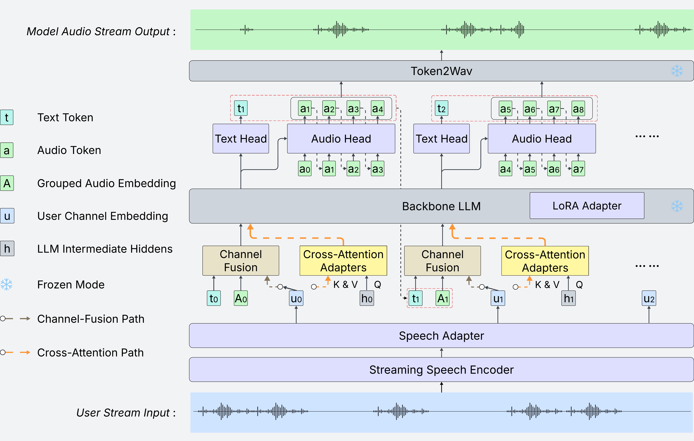

How Should LLMs Listen While Speaking? A Study of User-Stream Routing in Full-Duplex Spoken Dialogue
Code and model weights will be released soon.
Abstract
Full-duplex spoken dialogue requires a model to keep listening while generating its own spoken response. This is challenging for large language models (LLMs), which are designed to extend a single coherent sequence and do not naturally support user input arriving during generation. We argue that how the user stream is routed into the LLM is therefore a key architectural question for full-duplex modeling. To study this question, we extend a text-only LLM into a unified full-duplex spoken dialogue system and compare two routing strategies under a shared training pipeline: (i) channel fusion, which injects the user stream directly into the LLM input, and (ii) cross-attention routing, which keeps the user stream as external memory accessed through cross-attention adapters.
Experiments on spoken question answering and full-duplex interaction benchmarks reveal a clear tradeoff. Channel fusion yields stronger semantic grounding and consistently better question-answering performance. However, under semantically overlapping conditions such as user interruptions, it is more vulnerable to context corruption: if the model fails to stop in time, the overlapping user stream can interfere with ongoing generation and lead to semantically incoherent continuations. Cross-attention routing underperforms on question answering, but better preserves the LLM generation context and is more robust to this failure mode. These results establish user-stream routing as a central design axis in full-duplex spoken dialogue and offer practical guidance on the tradeoff between semantic integration and context robustness.
Architecture

Demo
Audio
Waveform
Dual-channel visualization with live playback cursor.
User text
Source: input.json and metadata.json in each sample folder. Turns use context vs interruption/backchannel fields when present; otherwise user speech is split on long pauses in chunks timestamps.
Assistant text
Source: output.json (text plus chunks with timestamps). Assistant turns are split when the gap between consecutive chunk end/start exceeds 1 second.